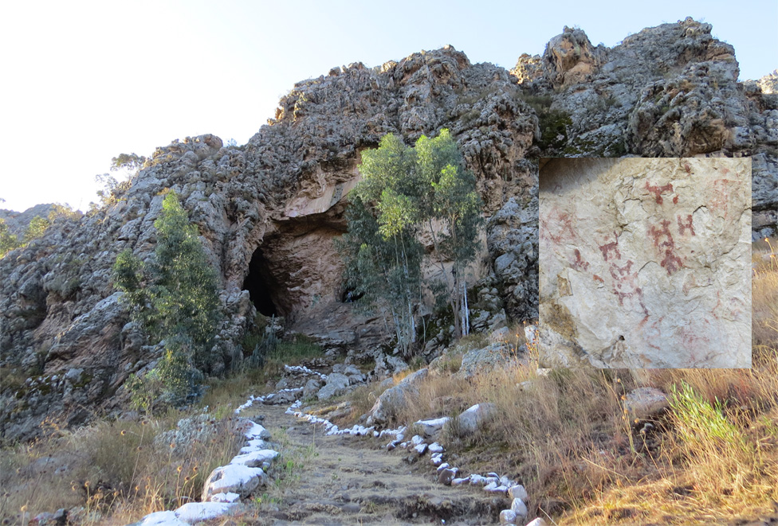

| Santa Apolonia |
Su nombre original fue rumitiana o rumipascana que en quechua significa Asiento de Piedra . Formación rocosa de origen volcánico. Ubicado en la parte alta a inmediaciones de la Plaza de Armas, constituye
un elemento plenamente integrado al espacio y paisaje urbano. |
 |
| Santuario Virgen del Rosario |
Ubicado en el centro poblado El Rosario de Polloc, el templo maravilla a sus visitantes con sus paredes, columnas, techos y piso decorados bajo la técnica de mosaico. El santuario de la Virgen del Rosario es el principal
atractivo del centro poblado El Rosario de Polloc y no podía ser de otra forma. Quién ingresa a este lugar queda maravillado por su belleza. |
 |
| Ventanillas de Otuzco |
Conocida arqueológicamente como necrópolis de Otuzco. Su denominación, ventanillas , proviene del aspecto que ofrecen como conjunto de cavidades dispuestas en hileras consecutivas horizontales. Las ventanillas
son concavidades de forma cuadrada y rectangular, talladas en bajo relieve en una superficie rocosa de origen volcánico.Algunas evidencias permiten señalar que corresponden a la cultura Cajamarca, que tuvo influencia
entre los años 300 y 800 dc. |
 |
| Granja Porcón |
El pueblo de Granja Porcón vive una vida aparte de la locura de la ciudad. Le gusta mostrar a sus visitantes la paz y la tranquilidad que vienen de su vida simple, los cuales traen consigo el poder de sanar su alma. |
 |
| Cumbe Mayo |
Está ubicado a 20 Km. al oeste de la ciudad de Cajamarca. A una altura de 3 500 m.s.n.m. Su nombre deriva de Cumbe: Fino y Mayo: Río Lo que en quechua quiere decir río fino . Cumbe Mayo está rodeado por
un fantástico bosque de piedras que parece reproducir la silueta de piadosos frailes por lo que familiarmente se les denomina frailones . |
|
| Los Baños del Inca |
Los Baños del Inca poseen aguas termales de temperaturas superiores a 70ºC (158ºF). Los minerales que las componen poseen propiedades terapéuticas para el tratamiento de afecciones a los huesos, sistema nervioso, piel
e incluso se dice que cura la gastritis. Uno de los principales atractivos de este lugar es el Pozo del Inca, ubicado al interior del complejo de Baños. |
 |
| Centro arqueológico Callacpuma |
Callacpuma, voz quechua que significa cerro del puma, se encuentra ubicado a 12 kilómetros de la ciudad de Cajamarca, entre los distritos de Llacanora y Los Baños del Inca. El cerro alberga pinturas rupestres, con diseños
de figuras antropomorfas, zoomorfas y geométricas, las cuales se encuentran repartidas en un área que abarca un total de 254 hectáreas, entre los 2650 y 3120 m.s.n.m. |
 |
| Cataratas de Llacanora |
Dos hermosas y grandes cataratas en el distrito de Llacanora, a 30 minutos de la ciudad de Cajamarca. |
 |
| Ventanillas de Combayo |
Las ventanillas de Combayo es un sitio arqueológico situado en el distrito de La Encañad a 35 km de la ciudad de Cajamarca. El sitio abarca unas 20 hectáreas. La criptas cumplía su función de recinto funerario.
Se encuentran en la ladera de un cerro, el mismo que levanta sobre los terrenos de una antigua hacienda y ahora poblada por una nutrida y entusiasta comunidad rural, que tiene desde tiempos atrás el nombre de Combayo.
Precisamente por encontrarse un tanto aislada la zona Las Ventanillas están bastantes conservadas. Incluso quienes la han visitado dicen que son más atractivas que las de Otuzco. Toca visitar. |
 |
| La Collpa |
Es uno de los atractivos turísticos de los alrededores de Cajamarca se ubica a 8 Km del centro de la ciudad, además de ello el llamado de vacas por su nombre, es lo que destaca de este centro turístico. |
 |
| Cuarto del rescate |
En este cuarto de rescate estuvo prisionero el inca Atahualpa durante ocho meses, desde noviembre 1532 hasta julio de 1533. Aquí el inca levantó su brazo y trazó una línea hasta donde alcanzaría el oro y la plata que
pagaría por su rescate. El inca Atahualpa cumplió. Mandó a traer el oro y la plata de Cusco, Huaylas y Huamachuco, sin embargo, nada impidió que los españoles lo ejecutaran en la Plaza de Armas. |
 |
| Laguna San Nicolás |
La laguna es brava. Nadie se puede acercar porque está encantada , narra un poblador de la zona. Ir a la laguna San Nicolás en el distrito de Namora, a 35 minutos de la ciudad de Cajamarca, es ir al encuentro
de la paz, tranquilidad y al contacto directo de la madre naturaleza. Este hermoso espejo de agua azulina se encuentra a más de 3 m.s.n.m., está llena de misticismo, encantos, historias y verdor, acompañada de aves
como los patos silvestres y los quindes, más conocido como picaflores o colibrís. Puede navegar la laguna en pequeñas balsas de totora. |
 |
| Jardín de las hortensias |
Se encuentra a 2km de la ciudad. Los cultivos ornamentales que predominan son las hortensias, oriundas de China y Japón de donde fueron llevadas a Sorochuco (Calendín) y de allí a Cajamarca. Es propiedad de la familia
Valdivia Rojas, ellos están al cuidado de todo el jardín y permiten las visitas al lugar, la casona es sencillamente una belleza y tiene un estilo arquitectónico sin igual. El ingreso es libre y la familia Valdivia
también nos ofrece comidas típicas, chicha de jora, artesanías, macetas de plantas de diversas especies, y por supuesto, ramos de hortensias que uno mismo puede escoger. |
 |
| Talleres de piedra de Huambocancha |
En el km 8,5 de la carretera a Bambamarca se encuentran los talleres de los picapedreros más hábiles del Perú. Los escultores son tan hábiles que pueden hacer cualquier forma. Si está interesado en algún trabajo, puede
llevar el diseño y de seguro lo harán. Un obra puede costar desde S/.1 hasta superar los S/.800. |
|
| Conjunto Monumental Belén |
Construida en el siglo XVIII, se ubica a una cuadra de la Plaza de Armas. Es el templo de estilo barroco más bello de la ciudad y quizá de todo el país. Esta edificación está integrada por la Iglesia Belén, el Hospital
de Varones y el Hospital de Mujeres y es uno de los monumentos históricos más emblemáticos de la región. |
|